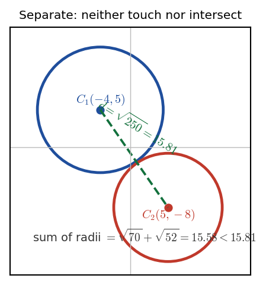

Harry → Phuc • 10 July 2026 tutorial
P2 WMA12/01 — May 2024 — Q7Q7 · Circles: centre, exact radius, proving non-intersection

Circles \(C_{1}\) (centre \((-4,5)\), radius \(\sqrt{70}\)) and \(C_{2}\) (centre \((5,-8)\), radius \(\sqrt{52}\)), drawn to scale. The distance between centres \(\sqrt{250}\approx15.81\) exceeds the sum of radii \(\sqrt{70}+\sqrt{52}\approx15.58\) by only \(\approx0.23\): the circles come very close but do not meet.
Part (a) · Centre and exact radius of \(C_{1}\)[3] · worked in lesson (exact-value fix)
Hide workingStrategy
Complete the square for both \(x\) and \(y\) to put the equation in the standard form \((x-p)^{2}+(y-q)^{2}=r^{2}\).
Working · complete the square
\[ x^{2}+8x=(x+4)^{2}-16,\qquad y^{2}-10y=(y-5)^{2}-25 \]\[ (x+4)^{2}-16+(y-5)^{2}-25=29 \;\Rightarrow\; (x+4)^{2}+(y-5)^{2}=70 \]
Result
Centre \((-4,\,5)\); exact radius \(\sqrt{70}\).
Sense check
\(70=29+16+25\) (the three constant terms). "Exact" means no decimals: write \(\sqrt{70}\), not \(8.366\).
Phuc's slip (recorded): Phuc wrote both \(\sqrt{70}\) and its decimal \(\approx 8.366\). Harry: "Exact = no decimals allowed." The mark was given here, but giving only the exact surd is safer.
Part (b) · Prove \(C_{1},C_{2}\) neither touch nor intersect[3] · worked in lesson (method fix)
Carry-in\(C_{1}\): centre \((-4,5)\), radius \(\sqrt{70}\). \(C_{2}\): centre \((5,-8)\), radius \(\sqrt{52}\). Two circles neither touch nor intersect iff distance between centres \(>\) sum of radii (externally separated).
Hide workingStrategy
Compute the distance between the two centres, compute the sum of the two radii, and compare. Conclude in words that the circles neither touch nor intersect.
Working · sum of radii
\[ \sqrt{70}+\sqrt{52}=8.3666\ldots+7.2111\ldots=15.58 \text{ (2 d.p.)} \]
Working · distance between centres
\[ d=\sqrt{(5-(-4))^{2}+(-8-5)^{2}}=\sqrt{9^{2}+13^{2}}=\sqrt{81+169}=\sqrt{250} =15.81 \text{ (2 d.p.)} \]
Working · compare and conclude
Since \(15.58<15.81\), i.e.
sum of radii \(<\) distance between centres, the circles are externally separated and neither touch nor intersect.
Result
\(\sqrt{70}+\sqrt{52}\approx15.58<\sqrt{250}\approx15.81\). The circles \(C_{1}\) and \(C_{2}\) neither touch nor intersect.
Sense check
This is a "detailed reasoning" part: show the decimal values (not just the inequality) and state the conclusion in words.
Phuc's slip (recorded): Phuc had the right idea (compare sum of radii vs distance) but stopped before calculating the distance and providing the comparison. Harry drew both circles and made him finish: compute both values, state "sum of radii \(<\) distance between centres" and conclude in words.
Radius corrected from video ledger: One Gemini segment "reconstructed" \(C_{1}\)'s radius as 5. The official \(C_{1}: x^{2}+y^{2}+8x-10y=29\) gives radius \(\sqrt{70}\) (MS: centre \((-4,5)\), radius \(\sqrt{70}\)). Use these.